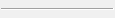

- GETN_COMBO(数値)
- GETN_LIST(文字列。選択のインデックスを返す)
- GETN_STRLIST(文字列。選択されたテキストを返す)
- GETN_STR_GROUP(複数選択)

- GETN_STR(文字列)
- GETN_NUM(数値)
- GETN_MULTILINE_TEXT(複数行テキスト)
GetN マクロとGetNBox 関数を使用して、シンプルなダイアログを作成できます。
ダイアログは、下図のようなものです。
次の関数を実行して上のダイアログを開きます。
#include <GetNbox.h> void simple_dialog() { GETN_BOX(trRoot) // "trRoot" というツリー変数を定義 // データ範囲のコントロール GETN_INTERACTIVE(Input, "Input data", "[Book1]Sheet1!A") // ラジオボタン GETN_RADIO_INDEX_EX(Operator, "Operator", 0, "Add|Subtract") // リストボックス GETN_LIST(type, "Operand", 0, "Constant|Reference Data") // 文字列編集ボックス GETN_STR(Constant, "Constant", "10") // 参照データのデータ範囲を選択 GETN_INTERACTIVE(Reference, "Reference Data", "[Book1]Sheet1!B") // 出力データのための列を選択 GETN_INTERACTIVE(Output, "Output data", "[Book1]Sheet1!C") // ダイアログを開く GetNBox(trRoot ); }
次表に、一般的なコントロールを示します。他のコントロールと、スタイルの設定については、Origin C Reference: Macros: GetNを確認してください。
| 画像 | 名前 |
|---|---|
|
|
|
|
|  | |
上のダイアログで、ダイナミックな表示/非表示の制御や、コンボリストの構築などのために、node_event 関数を追加できます。
以下のサンプル関数
GetNBox(trRoot);
を次のようにします。
GetNBox(trRoot, node_event);
以下のようにイベント関数を追加します。
int node_event(TreeNode& trRoot, int nRow, int nEvent, DWORD& dwEnables, LPCSTR lpcszNodeName, WndContainer& getNContainer, string& strAux, string& strErrMsg) { if( 0 == lstrcmp(lpcszNodeName, "type") || GETNE_ON_VALUE_CHANGE == nEvent || GETNE_ON_INIT == nEvent ) { trRoot.Constant.Show = (0 == trRoot.type.nVal); // Constantを表示 trRoot.Reference.Show = (1 == trRoot.type.nVal); // 参照を表示 } return 0; }
デフォルトの GetN ダイアログには、OKとキャンセルボタンがありますが、適用ボタンはオプションです適用ボタンが表示されていて、ユーザがこのボタンをクリックすると、ある操作のためのイベント関数を呼び出すことができます。
次のサンプルは、GetN ダイアログに適用ボタンを追加する方法と、適用ボタンをクリックした際にイベント関数_apply_event を呼び出す方法を示します。
#include <GetNbox.h> void GETN_Apply_ex1() { GETN_TREE(tr) GETN_COLOR(LineColor, "Color", 3) // カスタムパネルを含めるためのカラーリストをセットするオプション GETN_COLOR_CHOICE_OPTIONS(COLORLIST_CUSTOM | COLORLIST_SINGLE) bool bShowApply = true; if(GetNBox(tr, NULL, "Example", NULL, GetWindow(), bShowApply, _apply_event)) { out_str("Click OK"); } } // 適用ボタンイベント関数のインターフェースは、 // PAPPLY_FUNC typedef を参照 bool _apply_event(TreeNode& tr) { int nIndex = tr.LineColor.nVal; UINT cr = color_index_to_rgb(nIndex); printf("Red = %d, Green = %d, Blue = %d\n", GetRValue(cr), GetGValue(cr), GetBValue(cr)); return true; }
|
デフォルトでは、GetNダイアログの適用ボタンは最初のクリックでは非アクティブ状態で、GetNダイアログで変更が加えられるまでアクティブになりません。適用ボタンを常時アクティブにしたい場合、システム変数@EAB = 0に設定します。 |